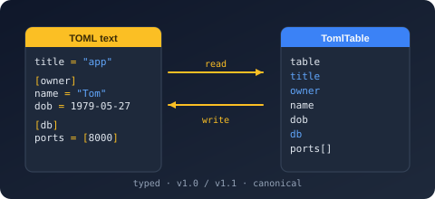

Namespace Bodu.Text.Toml.Reader

Purpose
Bodu.Text.Toml.Reader is the lowest tier of Bodu.Text.Toml: the forward-only token readers over UTF-8 TOML (v1.0.0, or v1.1.0 by opt-in). It exposes two cursors — the source-order lexer Utf8TomlReader, which reports table headers, dotted-key segments, comments, and values as they appear, and the normalized TomlDocumentReader, which walks the resolved table tree and is the reader a custom TomlConverter<T> binds through. The TomlSerializer and both DOMs are built over this tier.
Key types
- Utf8TomlReader — the source-order
ref structlexer:Read/Skip/TrySkip,TokenType(a TomlTokenType),ValueSpan,LineNumber/ColumnNumber, typedGet*/TryGet*accessors for every TOML scalar kind,GetComment, andValueTextEquals; theisFinalBlock+ state constructors support resumable multi-block reads. - TomlDocumentReader — the normalized tree-order cursor:
Read/Skip,TokenType,CurrentDepth, and theGet*scalar accessors. - TomlReaderOptions —
SpecVersion(a TomlSpecVersion) andMaxDepth. - TomlReaderState — the opaque snapshot carried between input blocks of a
Utf8TomlReader.
Example
using Bodu.Text.Toml;
using Bodu.Text.Toml.Reader;
var reader = new Utf8TomlReader("port = 8080"u8);
while (reader.Read())
{
if (reader.TokenType == TomlTokenType.Key)
Console.Write($"{reader.GetString()} = ");
else if (reader.TokenType == TomlTokenType.Integer)
Console.WriteLine(reader.GetInt64());
}
Notes
- Two token streams.
Utf8TomlReaderyieldsTableHeader/ArrayTableHeader/Key/Commenttokens in file order;TomlDocumentReaderyields the normalizedStartTable/PropertyName/ value shape with headers and dotted keys already resolved. - Strict by default. Parsing enforces v1.0.0; set
SpecVersiontoV1_1for the v1.1.0 additions. Malformed input throws TomlFormatException with line, column, and offset. - See also: the Bodu.Text.Toml introduction and the Using TOML guide (Pattern 9 — Process tokens by hand).
Structs
TomlDocumentReader
Provides a forward-only cursor over the normalized, tree-order token stream of a parsed TOML document, serving as
the binding layer through which converters consume values. The reader is a ref struct, so it
cannot be boxed or captured; pass it by ref to thread it through a converter.
TomlReaderOptions
Defines the customizations applied when creating a TomlDocumentReader.
TomlReaderState
Carries the resumable state of a Utf8TomlReader between input blocks: an opaque snapshot that, together with the unconsumed bytes, lets a new reader continue exactly where the previous block's reader stopped.
Utf8TomlReader
Provides a forward-only, source-order reader for UTF-8 TOML bytes: a ref struct that holds the
input span and scans it incrementally. Each Read() advances to the next lexical token in document order
— for example [server.tls] surfaces as TableHeader followed by a
Key per dotted segment, and ports = [1, 2] as a key, then
StartArray, two integers, and EndArray.